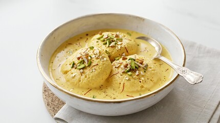

Home
Rasmalai

Description
Rasmalai is a popular Indian dessert made of soft, spongy cheese patties soaked in a rich, chilled, sweetened milk that's flavored with cardamom and saffron.
Ingredients
- 2 liter full-fat milk
- 2 tbsp lemon juice or vinegar (to curdle the milk)
- 1 tbsp all-purpose flour or cornstarch (optional, helps binding)
- 1.5 cups sugar
- 6 cups water
- 1/2 cup sugar (adjust to taste)
- 1/4 tsp cardamom powder
- A few strands of saffron
- 8–10 pistachios, chopped (for garnish)
- 8–10 almonds, chopped or slivered (for garnish)
- 1 tbsp rose water (optional, for extra fragrance)
Steps
- Curdle the milk – Bring the milk to a boil in a heavy-bottomed pot. Once boiling, reduce heat and slowly add lemon juice or vinegar while stirring, until the milk curdles and separates into curds (chenna) and whey (greenish liquid).
- Strain and rinse – Pour the curdled milk through a muslin cloth or cheesecloth to strain out the whey. Rinse the chenna under cold water to remove any sourness from the lemon/vinegar.
- Drain and knead – Squeeze out excess water from the cloth, then hang it for 30 minutes to drain further. Transfer the chenna to a plate and knead it with your palms for 8–10 minutes until smooth and soft (no graininess). Mix in the flour/cornstarch if using.
- Shape the patties – Divide the chenna into small equal portions and roll each into a smooth ball, then gently flatten into small discs (they'll puff up while cooking).
- Prepare the sugar syrup – In a wide, deep pot, bring sugar and water to a boil until the sugar dissolves completely.
- Cook the patties – Gently drop the chenna discs into the boiling syrup. Cover and cook on medium-high heat for 15–20 minutes, until the discs double in size and become spongy. Avoid opening the lid too often.
- Cool the patties – Once cooked, remove the patties from the syrup and let them cool. Gently squeeze each one between your palms to remove excess syrup.
- Make the rabri – In a separate pot, simmer the milk on low-medium heat, stirring occasionally, until it reduces to about half its volume and thickens slightly. Add sugar, cardamom powder, and saffron strands. Simmer for another 5 minutes.
- Soak the patties – Add the squeezed chenna patties into the warm rabri, letting them soak and absorb the flavored milk. Let it cool to room temperature.
- Chill and garnish – Refrigerate for at least 2–3 hours (or overnight for best results). Before serving, garnish with chopped pistachios, almonds, and a few drops of rose water if desired.
- Serve – Serve chilled, either as is or with an extra drizzle of rabri on top.